Exploration de données sur les accidents corporels de la circulation routière en 2021
Compétences mises en œuvre
- Utilisation de Power Query pour importer, transformer des données, puis les charger dans Power BI.
- Création de visualisations graphiques des données, utilisation de filtres.
- Création de nouvelles colonnes, nouvelles mesures et nouvelles tables de données.
- Travail sur les dates.
- Utilisation de boutons de navigation entre les pages.
Problématique
Le but de ce projet était de mettre en œuvre mes premières connaissances des fonctionnalités de Microsoft Power BI. J'ai pour cela utilisé un jeu de données regroupant des caractéristiques des accidents corporels de la circulation routière en France en 2021. Ce jeu de données étant très riche, le but n'était pas de l'exploiter complètement mais simplement de mettre en pratique mes compétences et d'en tirer quelques informations à travers un tableau de bord.
Données utilisées
J'ai utilisé un jeu de données open data mis à disposition par le ministère de l'intérieur. Ce jeu de données se compose de quatre fichiers CSV :
- le fichier caracteristiques_2021.csv comportant les caractéristiques principales de chaque accident : jour, heure, adresse, conditions climatiques et de luminosité,...
- le fichier lieux_2021.csv qui regroupe des informations plus précises sur le lieu où s'est produit chaque accident : type de voirie, état de la chaussée, profil de la route,...
- le fichier usagers_2021.csv qui regroupe des informations sur les victimes : genre, gravité de la blessure, catégorie de la personne (conducteur, passager, piéton), type de trajet effectué,...
- le fichier vehicules_2021.csv qui regroupe des informations sur les véhicules impliqués dans les accidents : type de véhicule, point du choc,...
Tous ces fichiers ainsi que le document de description des différentes variables sont accessibles ici
Importation, transformation et nettoyage des données
La première opération est d'importer les données. Cela se fait fichier par fichier. Avant de charger les données dans Power BI, il faut vérifier leur type, les données manquantes, les erreurs,...
Les types de données
Lors de l'importation, Power query détecte automatiquement le type de données. Mais ce type peut être modifié en fonction de nos besoins. Par exemple pour chaque fichier le numéro d'accident Num_Acc est considéré comme nombre entier par Power Query (voir image ci-dessous). Préférant l'avoir au format texte, je l'ai modifié en choisissant texte dans la liste déroulante du type de données.

Le travail de vérification du type de données est à faire pour chaque variable.
Les erreurs
A l'importation, la variable actp de la table usagers_2021 comportait des erreurs (voir ci-dessous l'indication d'erreurs). Cette variable correspond à l'action du piéton au moment de l'accident si la victime est un piéton. Chaque action est codée par un nombre entier : par exemple, 3 signifie que le piéton traversait la chaussée.
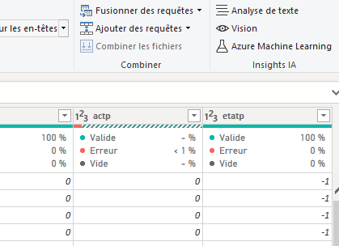
Alors que toutes les données de la variable devraient être numériques, après recherche je me suis aperçu qu'il existait parfois des données saisies sous forme de caractères. C'est pour ces valeurs que Power Query indique une erreur. Pour corriger le problème, j'ai décidé de créer une nouvelle colonne nommée actp_corr en utilisant la fonctionnalité Colonne personnalisée de Power Query. L'idée est de remplacer chaque erreur par -1, code correspondant à l'absence de renseignement sur l'action du piéton. Il n'est en effet pas possible de retrouver la véritable action du piéton au moment de l'accident. La formule ci-dessous permet pour chaque ligne de récupérer la valeur de la variable si elle est correcte et de remplacer les erreurs par -1.
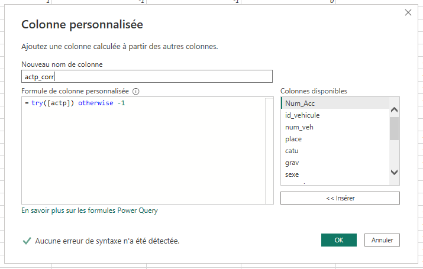
Valeurs manquantes
Certaines variables contiennent des valeurs manquantes (notées null). Ces variables étaient toutes des variables codées par des nombres et dont -1 signifie "Non renseigné". J'ai donc remplacé les valeurs manquantes par -1.
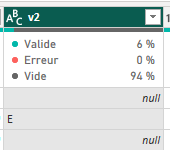
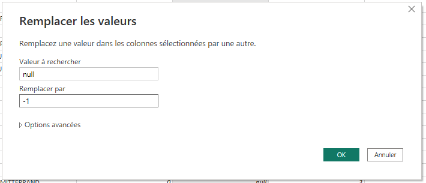
Recodage de variables
Le fait que les variables soient codées par des valeurs numériques n'est pas pratique pour la constitution de visualisations graphiques. Créer de nouvelles colonnes avec la signification de ces codes est important. Pour cela, on peut utiliser la fonctionnalité Colonne conditionnelle comme sur l'image ci-dessous.
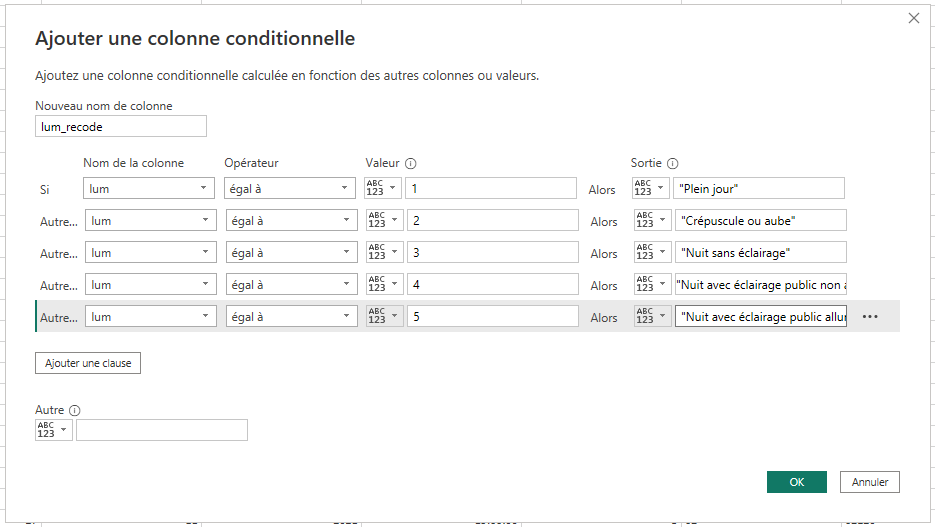
Création d'une variable horaire
Dans le jeu de données, l'heure d'un accident est indiqué à la minute près. Pour réaliser une étude temporelle, je voulais regrouper les accidents par classes : une classe par heure. Par exemple, tous les accidents ayant eu lieu entre 14h et 14h59 devaient appartenir à la même classe nommée 14.
Pour cela, il est facile de créer une nouvelle variable horaire grâce à la fonction Time.hour qui récupère l'heure d'une variable de type heure.
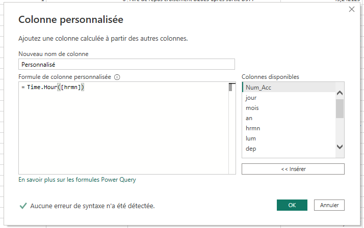
Chargement des données
Une fois toutes ces opérations faites, il ne reste plus qu'à charger les données dans Power BI.
Relations entre les tables
Avant de se lancer dans un tableau de bord, il faut relier les tables entre elles. Ici, les différentes tables sont à relier sur le numéro d'accident Num_Acc. Cela se fait dans l'onglet modèle de Power BI. On remarquera sur l'image ci-dessous une table Dates. Cette table ne fait pas partie du jeu de données initial. Je l'ai créée pour faire une étude temporelle des accidents (voir paragraphe correspondant).

Création du tableau de bord
Comme dit plus haut, le but de ce travail n'était pas de faire un rapport ou un tableau de bord exhaustif de toutes les informations que l'on peut tirer de ce jeu de données. Je ne présenterai donc que quelques pages avec des visualisations graphiques permettant de tirer quelques enseignements du jeu de données.
Aspect des pages
Avant de me lancer dans la création des différentes pages, j'ai réfléchi à la forme qu'elles prendraient. Voici ce que j'ai décidé :
- Présence d'une page d'accueil
- Présence d'un titre pour chaque page
- Présence de boutons permettant de naviguer de pages en pages
Une fois ces éléments mis en place, on peut créer pour chaque page les visualisations souhaitées. Voici les exemples de la page d'accueil et d'une page du tableau de bord :
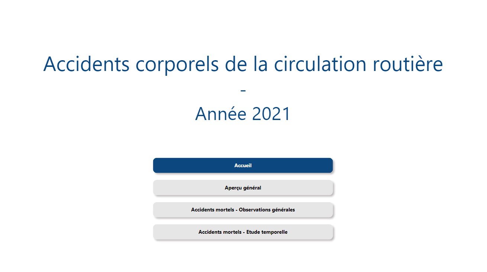
Je ne m'étendrai pas sur la page Aperçu général qui n'est constituée que de graphiques basiques. Passons directement à la page sur les accidents mortels.
Page sur les accidents mortels - Création de nouvelles mesures
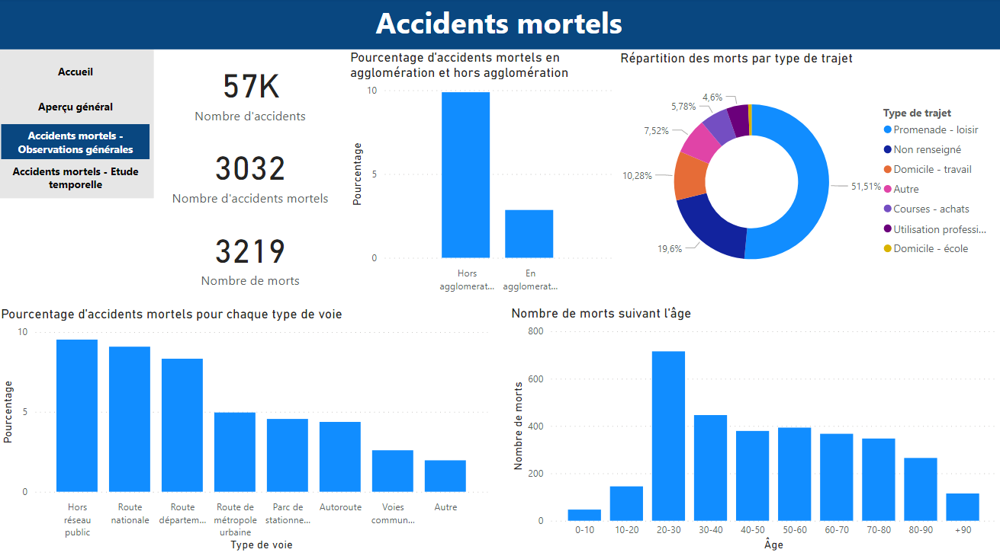
Pour constituer la page ci-dessus, j'ai dû créer de nouvelles mesures et donc utiliser les DAX. La première est le nombre d'accidents mortels. Pour cela, il suffit de compter dans la table caractéristiques le nombre de numéros d'accident pour lesquels il y a eu un mort (gravité égale à 2 dans la table usagers). Pour filtrer les données suivant la gravité de l'accident, on a besoin d'utiliser la fonction CALCULATE.
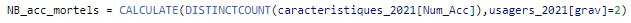
La deuxième mesure créée est le nombre de morts. Cela se fait de la même manière en comptant cette fois le nombre d'usagers dont la gravité de l'accident est établie à 2.
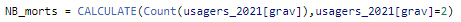
Quant à la variable comptabilisant le nombre d'accidents, il s'agit simplement d'un décompte du nombre de numéros d'accident.
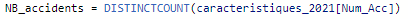
Enfin, j'ai eu besoin de calculer le pourcentage d'accidents mortels parmi tous les accidents. Cela se fait très facilement à l'aide des mesures créées précédemment.
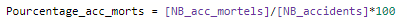
Étude temporelle - Travail sur les dates
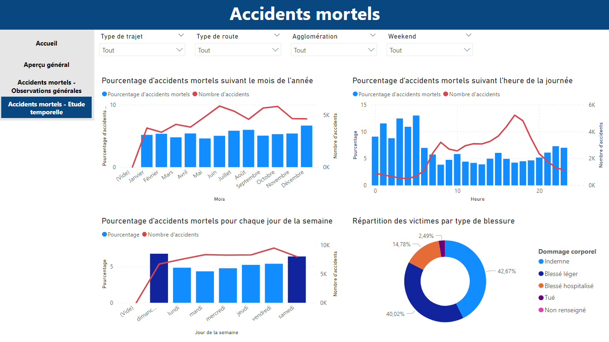
Création d'une variable date
Le jeu de données comporte trois colonnes pour les dates : une pour l'année, une pour le mois et une pour le jour. Cela est très pratique si l'on veut par exemple analyser le nombre d'accidents par mois. Mais on peut être amené à utiliser la date complète d'un accident. Pour cela, il est plus pratique d'avoir également une variable contenant cette date. Il est facile d'obtenir cette colonne grâce à la fonction Date à laquelle il suffit de passer l'année, le mois et le jour comme paramètres.
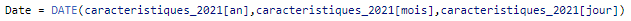
Création d'une table Dates
En créant la variable date, on obtient pour chaque accident la date à laquelle il a eu lieu. Même s'il y a peu de chances que cela se produise, il peut exister un jour sans accident et donc manquer une date parmi toutes les dates de l'année. Or pour certains calculs ou graphiques, il est important d'avoir une variable contenant toutes les dates comprises entre la première et la dernière date du jeu de données. J'ai donc créé une nouvelle table Dates contenant une variable Date possédant toutes ces dates. Pour cela, on peut utiliser la fonction CALENDAR et lui passer en paramètres la première et la dernière date du jeu de données.
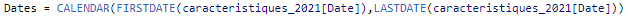
Dans cette table, j'ai également décidé de créer une colonne contenant le numéro du jour de la semaine et une autre contenant le nom du jour de la semaine. Cela peut permettre d'étudier les accidents en fonction du jour de la semaine.
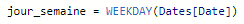
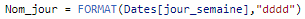
Enfin, voulant comparer les accidents ayant lieu le week-end et ceux de la semaine, j'ai créé une variable weekend en utilisant une simple structure conditionnelle.
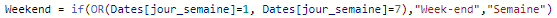
Voici la table Dates créée :
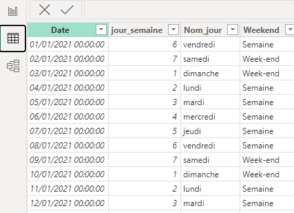
A partir de toutes les mesures, tables et colonnes créées, j'ai pu organiser la page présentée au début de cette section sur les accidents mortels en fonction de différentes variables temporelles (moi, heure, jour de la semaine).
On peut noter que j'ai inclu des slicers/segments qui sont des filtres permettant d'inspecter les données en se focalisant sur des types particuliers d'accidents. Par exemple, l'image ci-dessous montre la page après avoir sélectionné uniquement les accidents survenus sur un trajet domicile-travail. On voit bien apparaître les deux pics d'horaires d'entrée et de sortie du travail sur la courbe présentant le nombre d'accidents. En revanche, on constate que ce n'est pas sur ces horaires que la proportion d'accidents mortels est la plus élevée.
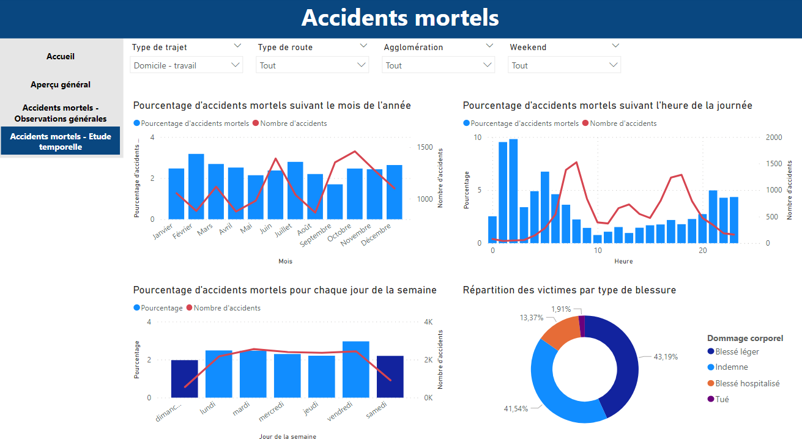